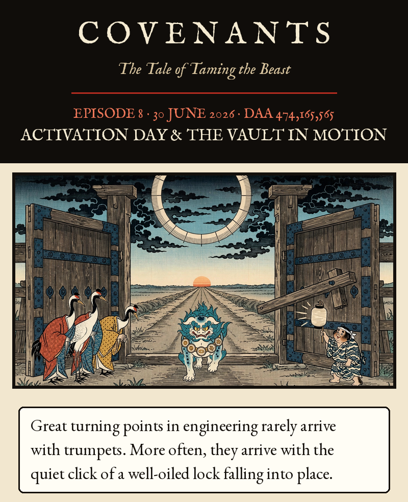
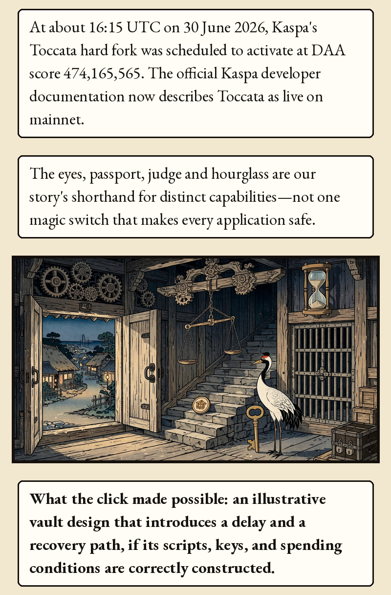
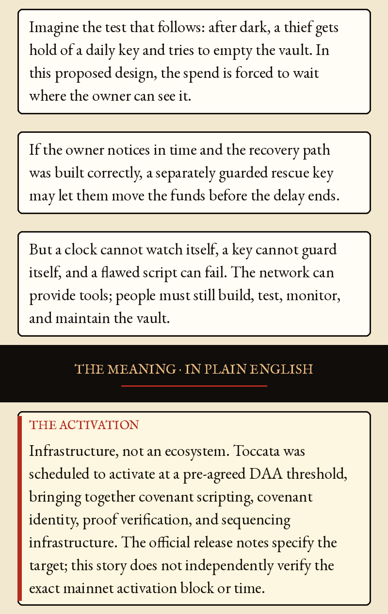
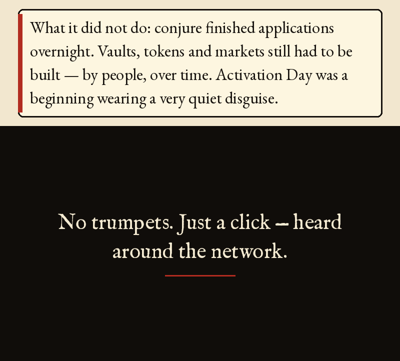
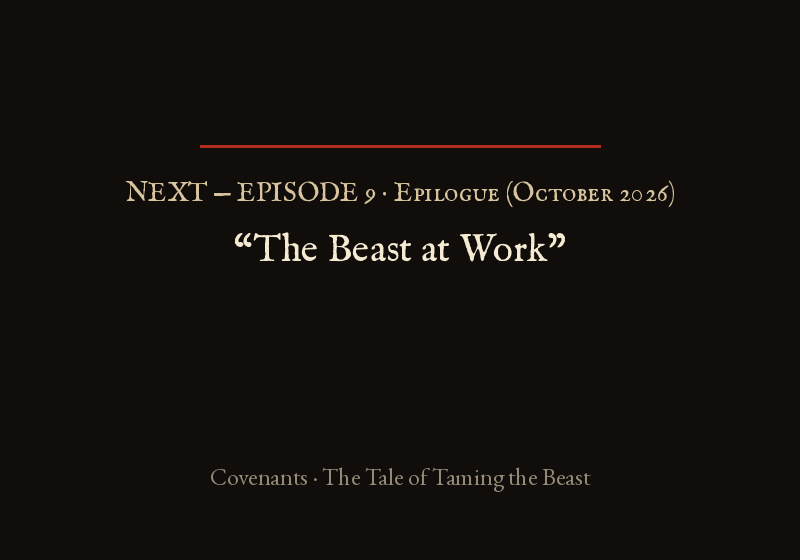

Episode 8 · Activation Day & The Vault in Motion





Episode 8 · Activation Day & The Vault in Motion — 30 June 2026 · DAA 474,165,565
Great turning points in engineering rarely arrive with trumpets. More often, they arrive with the quiet click of a well-oiled lock falling into place.
At about 16:15 UTC on 30 June 2026, Kaspa's Toccata hard fork was scheduled to activate at DAA score 474,165,565. The official Kaspa developer documentation now describes Toccata as live on mainnet. The eyes, passport, judge and hourglass are our story's shorthand for distinct capabilities—not one magic switch that makes every application safe.
What the click made possible: an illustrative vault design that introduces a delay and a recovery path, if its scripts, keys, and spending conditions are correctly constructed.
Imagine the test that follows: after dark, a thief gets hold of a daily key and tries to empty the vault. In this proposed design, the spend is forced to wait where the owner can see it. If the owner notices in time and the recovery path was built correctly, a separately guarded rescue key may let them move the funds before the delay ends. But a clock cannot watch itself, a key cannot guard itself, and a flawed script can fail. The network can provide tools; people must still build, test, monitor, and maintain the vault.
THE MEANING · IN PLAIN ENGLISH
THE ACTIVATION — Infrastructure, not an ecosystem. Toccata was scheduled to activate at a pre-agreed DAA threshold, bringing together covenant scripting, covenant identity, proof verification, and sequencing infrastructure. The official release notes specify the target; this story does not independently verify the exact mainnet activation block or time.
What it did not do: conjure finished applications overnight. Vaults, tokens and markets still had to be built — by people, over time. Activation Day was a beginning wearing a very quiet disguise.
No trumpets. Just a click — heard around the network.
rusty-kaspa Toccata Hardfork Node Setup Guide: https://github.com/kaspanet/rusty-kaspa/blob/master/docs/toccata-guide.md (states scheduled activation at DAA score 474,165,565, approximately 30 June 2026 16:15 UTC). The release notes name KIP-16, 17, 20 and 21; the docs source map also lists KIP-24 (transaction v1 fields) and KIP-25 (compute budget). docs.kaspa.org/toccata states Toccata is active on mainnet as of 30 June 2026 at DAA score 474,165,565. No on-chain activation time is claimed here; this project did not inspect mainnet data.